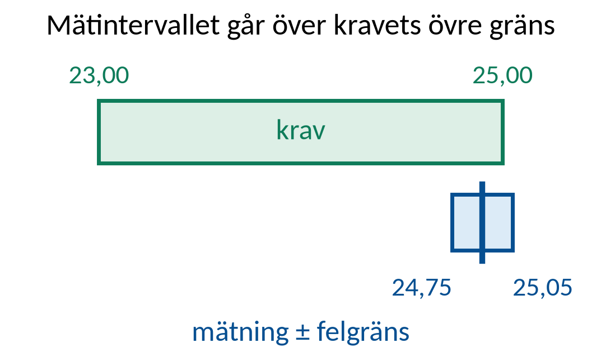
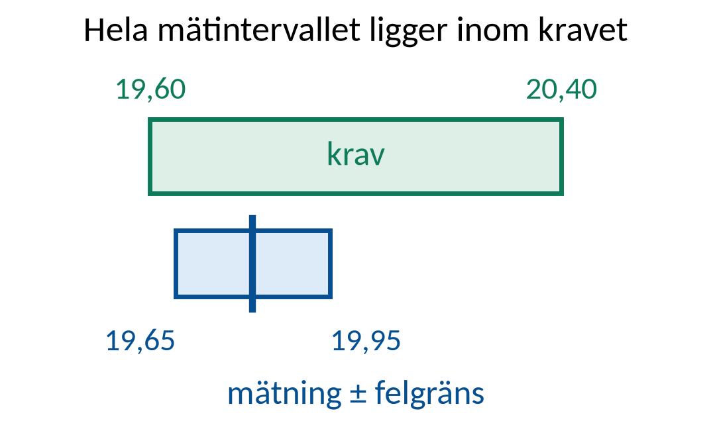
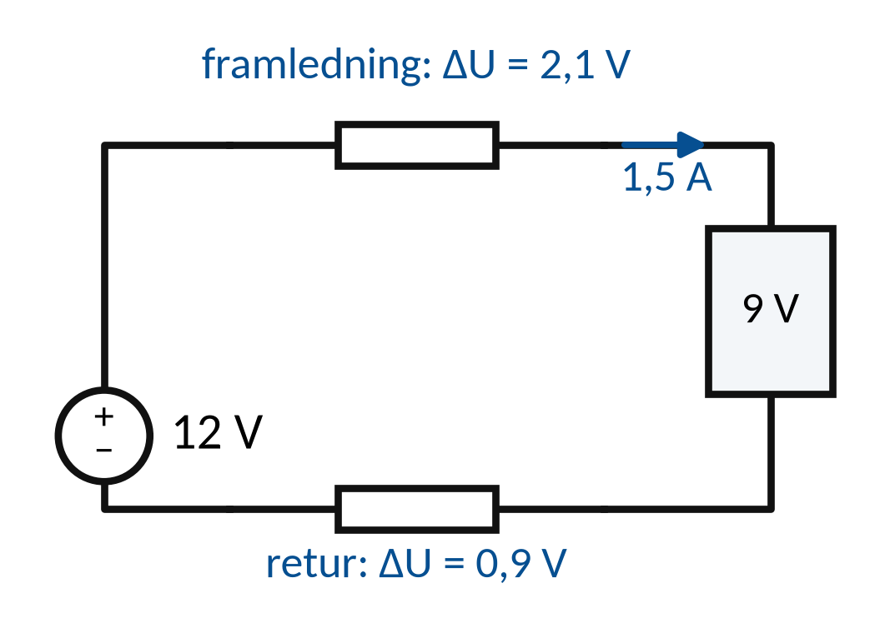
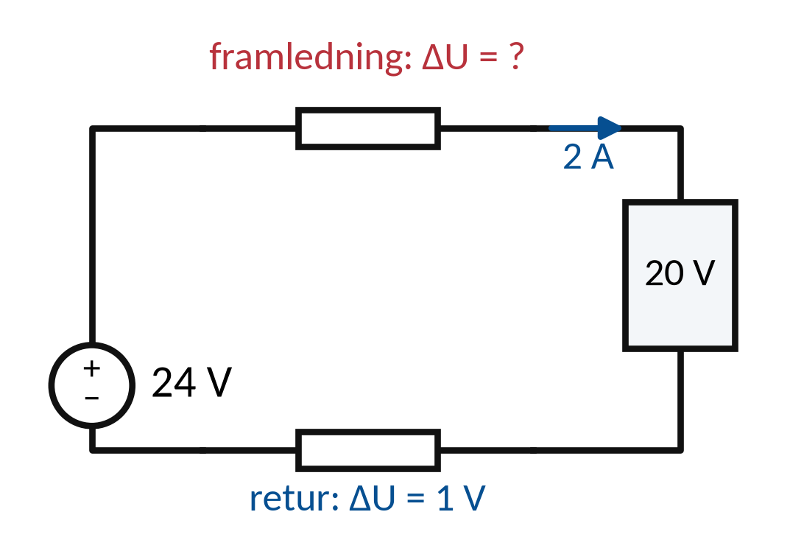

Vecka 44 · Del 4 av 5
Analys av mätresultat
Övningarna i den här delen är numrerade 2.1–2.10.
Vi pratar om: Mätvärde, krav och hypoteser (avsnitt 1–4) och ett exempel · Åtgärd, protokoll och återgång (avsnitt 5–7) och ett exempel
Öppna presentationenPresentationen som PDF
Läxor efter lektionen
Läs del 4: alla sju avsnitt och de två exemplen. Tryck på ”Jag har läst del 4” längst ned på sidan.
Gör övning 2.4–2.6 på delsidan för del 4. Ledtrådar och facit finns där.
Öppna övning 2.4Gör inlämning 1–3 på veckans inlämningssida.
Öppna inlämningenGör analysen av mätdata, inlämning 4. Den bygger på del 3 och 4.
Öppna analysenGör övningstentan utan att titta i lösningarna.
Öppna övningstentan
På lektionen: övning 2.1–2.3 gör vi tillsammans.
1 Översikt
Det här ska du kunna
- avgöra om ett mätintervall ligger inom ett krav.
- värdera hur starkt mätdata stödjer en felhypotes.
- skriva en rapport som visar kontrollkedjan och kvarstående osäkerhet.
Fundera först: Vad kan du faktiskt bevisa med ett enda korrekt spänningsvärde? Svaret finns i teorin nedan.
Så gör du
- Läs teorin ett avsnitt i taget (7 korta avsnitt). Sist i varje avsnitt står vilka övningar du kan göra direkt.
- Följ exemplen med papper och räknare, steg för steg. Gissa nästa steg innan du läser det.
- Gör övningarna 2.1–2.10. Fastnar du: Ledtråd 1 visar vilket samband du behöver och var i teorin det förklaras. Ledtråd 2 visar hur du börjar och Ledtråd 3 exemplet som räknar samma sorts uppgift med andra tal. Öppna facit när du har ett eget svar.
- Lämna in veckans uppgifter: Veckans inlämning.
Så skriver du en lösning som går att följa
1. Givet och sökt
Skriv av värden, enheter och vad du ska bestämma.
2. Samband och villkor
Välj formel eller princip. Kontrollera koppling, driftfall och antaganden.
3. Uträkning och kontroll
Omvandla enheter, sätt in värden och tolka resultatet.
I resonemangsfall: koppla observation till en motiverad slutsats.
Lärarens presentation · PDF · Räknarhjälp · Formelblad
Förkortningar och beteckningar i den här delen (3)
- R
- resistans. Resistorns motstånd mot ström. Beror inte på frekvensen. Enhet: Ω (ohm).
- SS-EN
- svensk och europeisk standard (SS: svensk standard, EN: europeisk standard). En europeisk standard som också gäller som svensk standard. Efter numret står utgåva och år.
- SEK
- SEK Svensk Elstandard. Organisationen som ger ut standarder för el i Sverige.
2 Teori
Ett avsnitt i taget: öppna det, läs, och gör sedan övningarna som står sist i avsnittet. Formeln bredvid rubriken är det viktigaste i avsnittet.
1Mätvärde, intervall och slutsatsSlutsatsen bygger på intervallet, inte bara på talet.
Slutsatsen bygger på intervallet, inte bara på talet.
Ett mätvärde gäller vissa punkter vid ett bestämt driftläge.
Felgränsen bildar ett intervall kring avläsningen.
Kravet säger vilka värden som är tillåtna. Det kallas toleransintervall.
Beslutsregeln i kursen: hela mätintervallet måste ligga inom kravet.
Öva nu: Övning 2.3
2Mätdata och slutsats”24 V vid A” bevisar inte ”hela matningen är felfri”.
”24 V vid A” bevisar inte ”hela matningen är felfri”.
En mätning gäller vissa punkter vid ett visst driftläge.
Slutsatsen får inte vara mer omfattande än underlaget.
Lastström, referens, tidsförlopp och instrumentdata avgör hur resultatet kan användas.
Öva nu: Övning 2.1, Övning 2.9
3Jämförelse med ett kravMätintervall och toleransintervall
Mätintervall och toleransintervall
Jämför resultatets intervall med det angivna kravet.
Redovisa hur osäkerhet eller felgräns påverkar beslutet.
Krav 23,0–25,0 V, mätning 24,90 ±0,15 V: intervallet 24,75–25,05 V går över kravets övre gräns, så överensstämmelse kan inte visas.

Öva nu: Övning 2.2
4Flera observationer tillsammansHypoteser jämförs mot alla relevanta data.
Hypoteser jämförs mot alla relevanta data.
Oberoende kontroller kan stärka eller försvaga samma hypotes.
En annan felorsak kan ge ett liknande symtom.
Pröva varje hypotes mot alla mätvärden, inte bara mot det första symtomet.
Öva nu: Övning 2.4, Övning 2.5, Övning 2.6
5Åtgärd och rotorsakSkada, orsak, åtgärd och förebyggande kontroll.
Skada, orsak, åtgärd och förebyggande kontroll.
En utbytt komponent kan återställa funktionen tillfälligt.
Bakomliggande orsak kan finnas kvar.
En bränd anslutning kan kräva utredning av belastning, kontaktförhållanden och föreskriven montering.
Öva nu: Övning 2.7
6Kontrollprotokollets innehållVarje slutsats ska kunna följas tillbaka till data.
Varje slutsats ska kunna följas tillbaka till data.
Ange objekt, revision, mätpunkter, driftläge och instrument.
Redovisa förväntat värde, uppmätt värde och bedömning.
Dokumentera avvikelser och vem som fattat beslut om återgång eller fortsatt utredning.
Öva nu: Övning 2.8
7Kvalitetssäkrad återgångFunktionsprov, säkerhetskontroll och återlämning.
Funktionsprov, säkerhetskontroll och återlämning.
Kontrollera att felet är åtgärdat i det relevanta driftfallet.
Skydd och normal dokumentation ska vara återställda.
Ombord: avsluta arbetstillstånd och LOTO (låsning och märkning), kontrollera isolationsvaktens värde, informera vakthavande och bryggan, för in åtgärden i maskindagbok och underhållssystem.
Öva nu: Övning 2.10
3 Exempel
Följ exemplet steg för steg med papper och räknare. Försök själv med nästa steg innan du läser det. Övningarna använder samma metod med andra tal.
E1Ett mätintervall mot krav
Krav 20,0 V ±2 %. Mätning 19,80 V ±0,15 V. Hela mätintervallet måste ligga inom kravet.
Krav = 20,0 · (1 ± 0,02); mätintervall = 19,80 ±0,15
- Krav: 19,60–20,40 V.
- Mätintervall: 19,65–19,95 V.
- Hela mätintervallet ligger inom kravet: överensstämmelse visad.
Med större felgräns eller en annan beslutsregel kan slutsatsen bli en annan.

E2Fram- och returväg
Källa 12 V, last 9 V och ström 1,5 A. Returens fall är 0,9 V. Samtidiga data.
ΔUfram = Ukälla − Ulast − ΔUretur; R = ΔU/I
- Totalt fall = 12 − 9 = 3 V.
- Framfall = 3 − 0,9 = 2,1 V. Rfram = 2,1/1,5 = 1,4 Ω.
- Rretur = 0,9/1,5 = 0,6 Ω.
Kontroll: (1,4 + 0,6) Ω · 1,5 A = 3 V. Beräkningen lokaliserar fall till två delar.

4 Övningar
Räkna på papper. Bocka av en övning när du har kontrollerat ditt svar mot facit. Avbockningen sparas i den här webbläsaren.
Övning 2.1: Mätningens räckvidd
Du mäter 24,0 V på en källa. Ingen last är inkopplad. a) Vad vet du nu? b) Vad vet du inte än, och vad behöver du mäta för att veta det?
Givet: 24,0 V vid källans anslutningar, mätt utan last.
Ledtråd 1: vilken princip?
Utgå från Slutsatsen begränsas av mätvillkoret. Läs Teori 2: Mätdata och slutsats.
Ledtråd 2: hur börjar jag?
Utan last går nästan ingen ström. Tänk på vad som kan ändras när lasten kopplas in. Skriv en slutsats du kan dra direkt och en fråga som kräver mer data.
Ledtråd 3: steg för steg
1) Vad säger ett värde utan last? 2) Vad säger det inte om källan under last? 3) Vilka mätningar behövs för den andra frågan? Skriv en slutsats du kan dra nu och en fråga som behöver mer data.
Facit
Stöds: källan ger 24,0 V utan last. Kräver mer data: om spänningen håller under last. Mät då ström och spänning under last.
Övning 2.2: Kravjämförelse
Kravet är 12,0 V ±5 %. Mätningen är 11,45 V ±0,10 V. Är hela mätintervallet inom kravet?
Givet: Unom = 12,0 V, p = 5, Um = 11,45 V, δ = 0,10 V. Ett värde precis på gränsen är godkänt.
Ledtråd 1: vilken princip?
Utgå från Krav: Unom · (1 ± p/100) och Mätintervall: Um ± δ. Läs Teori 3: Jämförelse med ett krav.
Ledtråd 2: hur börjar jag?
p är toleransen i procent och δ felgränsen. Svaret är ja bara om hela mätintervallet ligger inom kravet. Räkna ut båda intervallen och jämför särskilt de nedre gränserna.
Ledtråd 3: steg för steg
1) Räkna kravets gränser: nominellt ± procent. 2) Räkna mätningens gränser: mätvärde ± felgräns. 3) Ligger hela mätintervallet inom kravet? Jämför särskilt den nedre gränsen. Annat fall: krav 24,0 V ±10 %, mätning 22,0 ±0,5 V.
Facit
Krav: 11,40–12,60 V. Mätning: 11,35–11,55 V. Nej, den nedre mätgränsen 11,35 V ligger under 11,40 V.
Övning 2.3: Skillnad mellan instrument
Två instrument mäter samma spänning. A visar 10,00 V ±0,10 V. B visar 10,12 V ±0,10 V. Måste ett av instrumenten vara fel?
Givet: A: 10,00 ±0,10 V. B: 10,12 ±0,10 V. Båda mäter samma stabila spänning i samma punkter.
Ledtråd 1: vilken princip?
Utgå från Intervall = visning ± angiven gräns. Läs Teori 1: Mätvärde, intervall och slutsats.
Ledtråd 2: hur börjar jag?
Om intervallen överlappar finns det värden som stämmer med båda instrumenten. Räkna ut intervallen och den del de har gemensamt. Dra ingen starkare slutsats än jämförelsen tillåter.
Ledtråd 3: steg för steg
1) Räkna intervallet för A. 2) Räkna intervallet för B. 3) Har intervallen något gemensamt? 4) Vad betyder det för frågan om ett instrument är fel?
Facit
Nej. A: 9,90–10,10 V. B: 10,02–10,22 V. Intervallen överlappar mellan 10,02 och 10,10 V, så skillnaden bevisar inte att något instrument är fel.
Övning 2.4: Mätning under last
Källan har 24 V, lasten 20 V och strömmen är 2 A. Spänningsfallet i returledaren är uppmätt till 1 V. Hur stort är fallet i framledaren?
Givet: Källa 24 V, last 20 V, ström 2 A och 1 V i returledaren. Värdena är mätta samtidigt.

Ledtråd 1: vilket samband?
Använd ΔUtotal = Ukälla − Ulast och ΔUfram = ΔUtotal − ΔUretur. Läs Teori 4: Flera observationer tillsammans.
Ledtråd 2: hur börjar jag?
Hela spänningsfallet är summan av fallet i framledaren och i returledaren. Räkna först ut hela fallet och dra sedan bort returledarens del.
Ledtråd 3: steg för steg med andra tal
1) Hela slingans fall är källans spänning minus lastens. 2) Dra bort fallet i returledaren. Det som blir kvar ligger i framledaren. Exempel: källa 24 V, last 22 V och 0,8 V i returledaren ger slingfallet 2 V och 1,2 V i framledaren.
Facit
Slingfall 4 V. Framledningen 3 V.
Övning 2.5: Resistansfördelning
Använd värdena i föregående övning. Beräkna resistansen i framledaren och i returledaren.
Givet: Källa 24 V, last 20 V, I = 2 A. ΔUretur = 1 V och ΔUfram = 24 − 20 − 1 V.
Ledtråd 1: vilket samband?
Använd Rfram = ΔUfram/I; Rretur = ΔUretur/I. Läs Teori 4: Flera observationer tillsammans.
Ledtråd 2: hur börjar jag?
I en enkel seriekrets går samma ström i fram- och returledaren. Räkna ut fallet i framledaren och dela varje spänningsfall med strömmen.
Ledtråd 3: steg för steg med andra tal
1) Använd R = ΔU/I för varje ledare för sig. 2) Samma ström går genom båda ledarna. Exempel: 1,2 V i framledaren och 0,8 V i returledaren vid 4 A ger Rfram = 0,30 Ω och Rretur = 0,20 Ω.
Facit
Rfram = 3/2 = 1,5 Ω. Rretur = 1/2 = 0,5 Ω.
Svar: Rfram ≈ 1,5 Ω · Rretur ≈ 0,5 Ω
Övning 2.6: Två felhypoteser
En pump går långsamt. Källan håller 24 V, motorn får 18 V och i kabeln faller 6 V under last. Vilket stämmer bäst: en svag källa eller för hög resistans i kabeln?
Givet: Källan håller 24 V, motorn får 18 V och i kabeln faller 6 V under last.
Ledtråd 1: vilken princip?
Utgå från Ukälla = Ulast + ΔUkabel. Läs Teori 4: Flera observationer tillsammans.
Ledtråd 2: hur börjar jag?
Spänningar som mäts under samma belastning visar var förlusten uppstår. Jämför vilken av förklaringarna som stämmer med alla mätvärden, och ange vad nästa kontroll ska ta reda på.
Ledtråd 3: steg för steg
1) Vad visar källans spänning under last om källans styrka? 2) Var försvinner resten av spänningen? 3) Vilken förklaring stämmer med alla tre värdena? 4) Vad ska nästa kontroll ta reda på?
Facit
Förhöjd resistans i kabelvägen. Källan håller 24 V och 6 V förloras i kabeln. Nästa steg är att lokalisera var fallet uppstår.
Övning 2.7: Åtgärd utan orsak
Ett skydd har bytts två gånger och löser ut igen. Varför räcker det inte att byta det en gång till?
Givet: Skyddet har bytts två gånger och löser ut igen. Ingen har utrett orsaken.
Ledtråd 1: vilken princip?
Utgå från Utlöst skydd kan vara korrekt reaktion på kvarstående fel. Läs Teori 5: Åtgärd och rotorsak.
Ledtråd 2: hur börjar jag?
Ett fel som kommer tillbaka kan bero på belastningen, en felström, inställningen eller att fel skydd är valt. Förklara varför ett byte inte är en diagnos och ange vilken information som bör samlas in.
Ledtråd 3: steg för steg
1) Om skyddet löser igen efter byte, vad pekar det på? 2) Vilka orsaker kan finnas: för stor last, felström, fel inställning eller fel skydd? 3) Vilka uppgifter behöver samlas in innan något byts igen?
Facit
Skyddet reagerar troligen korrekt på ett kvarstående fel. Samla uppgifter om ström, belastning, felström, inställning och skyddsval innan något byts.
Övning 2.8: Dokumentation
Rapporten säger ”bytte kabel, fungerar”. Ange tre saker som bör läggas till så att någon annan kan följa vad som gjorts.
Givet: Rapporten innehåller bara ”bytte kabel, fungerar”.
Ledtråd 1: vilken princip?
Utgå från Spårbar rapport binder objekt till åtgärd och prov. Läs Teori 6: Kontrollprotokollets innehåll.
Ledtråd 2: hur börjar jag?
Någon annan ska kunna se vad som ändrades, varför och vad kontrollen efteråt visade. Tänk dig att en kollega läser rapporten om ett år. Vad behöver hen veta om kabeln, om arbetet och om provet efteråt?
Ledtråd 3: steg för steg
1) Kabeln: hur ska en kollega hitta exakt samma kabel? 2) Arbetet: varför byttes kabeln, och vad gjordes? 3) Provet efteråt: vad behöver en kollega veta för att kunna lita på provet? Skriv ett konkret tillägg för varje punkt.
Facit
Objekt-ID för kabeln, orsak och vad som gjordes, samt efterkontrollens mätvärden med datum och namn.
Övning 2.9: Förändrade driftvillkor
En funktion är provad med vanlig matning. Den är inte provad på reservmatning. Skriv slutsatsen i en eller två meningar: vad är kontrollerat, och vad är inte kontrollerat?
Givet: Funktionen har provats i normal drift. Ingen kontroll på reservmatning är redovisad.
Ledtråd 1: vilken princip?
Utgå från Verifierat driftfall ska anges i slutsatsen. Läs Teori 2: Mätdata och slutsats.
Ledtråd 2: hur börjar jag?
Att funktionen fungerar i normal drift säger inget om hur den fungerar på reservmatning. Skriv vad som är kontrollerat och vad som återstår, utan att godkänna allt.
Ledtråd 3: steg för steg
1) Skriv vad som är kontrollerat och i vilket driftfall. 2) Skriv vad som inte är kontrollerat. 3) Skriv vad som återstår. Godkänn inte mer än du har provat.
Facit
Exempel: ”Funktionen är verifierad i normaldrift. Reservdrift är inte kontrollerad och måste provas separat.”
Övning 2.10: Samlad slutsats
Före åtgärden föll 6 V i kabeln vid 3 A. Efter åtgärden faller 0,3 V vid samma ström, och lasten fungerar. Skriv en teknisk slutsats och en kontroll som återstår.
Givet: Före: 6 V vid 3 A. Efter: 0,3 V vid 3 A. Lasten fungerar efter åtgärden.
Ledtråd 1: vilken princip?
Utgå från Rföre = ΔUföre/I; Refter = ΔUefter/I. Läs Teori 7: Kvalitetssäkrad återgång.
Ledtråd 2: hur börjar jag?
Resistanserna kan jämföras direkt eftersom ström och mätpunkter är desamma. Räkna ut båda och beskriv vad de visar. Ange också vilken föreskriven kontroll av anslutning eller säkerhet som återstår.
Ledtråd 3: steg för steg
1) Räkna resistansen före: U/I. 2) Räkna resistansen efter vid samma ström. 3) Skriv vad jämförelsen visar. 4) Skriv vilken föreskriven kontroll av anslutning eller skydd som återstår. Annat fall: 2,4 V vid 4 A före och 0,2 V vid 4 A efter.
Facit
Rföre = 2,0 Ω, Refter = 0,10 Ω. Åtgärden har minskat resistansen kraftigt. Kvar att göra: föreskriven kontroll av anslutning och skydd.
Klart med delen?
När behöver du skriva ”underlaget räcker inte” i stället för ”godkänt”?
Färdigställ analysen av mätdata och markera minst en osäkerhet. Gör övningstentan inför fredagens repetition.
5 Labben
Veckans labb står i läxorna efter lektionerna och under Hela veckan på veckosidan. Du använder samma metod som i övningarna: räkna först, läs av, jämför och förklara.
Källor och fortsatt läsning
Sjöskolan: vecka 44, del 4 Analys av mätresultat
Kursplanen för Elteknik och ellära, lärandemål 5, 7 och 8
Sjöskolan: elevprotokoll med kolumner för plan, mätning och analys
Fluke: multimeterns funktioner och mätning
SS-EN 50110-1 utgåva 4:2024, Skötsel av elektriska anläggningar (SEK Svensk Elstandard)
OpenStax: Kirchhoffs lagar
Har du läst hela del 4?
Knappen öppnas när du har läst hela sidan (minst 3 minuter).